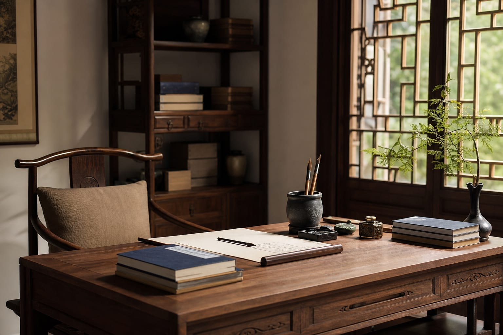
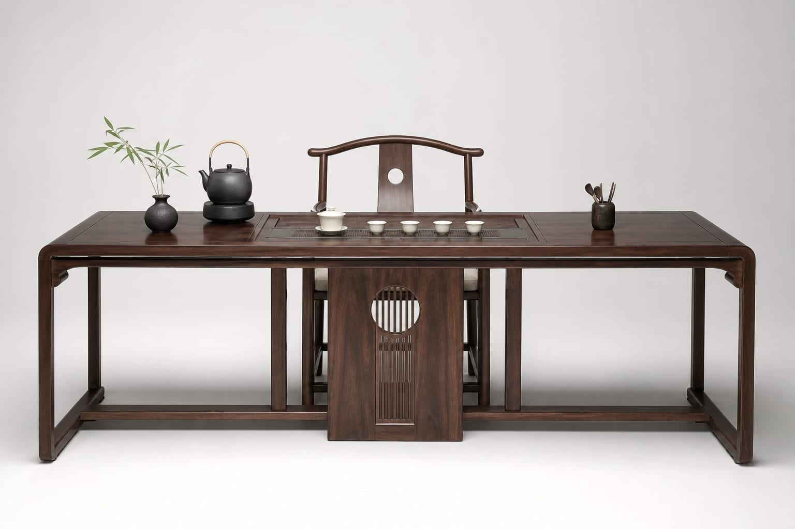

云栖沙发组
实木框架搭配亚麻软包，低矮形制，营造围合感会客空间。
南方全屋定制的特色系列。承古意而不泥古，在简约空间中留住东方气韵——适合想有点中式味道、又不想太传统的客户。

新中式并非简单的复古，而是在理解宋、明等古典家具精神的基础上，结合现代建筑尺度与生活方式进行的再创造。它摒弃繁复雕饰，保留结构之美与材质之真，让家具既融入当代家居，又保有文化辨识度。
南方全屋定制的新中式方案，以黑胡桃、榆木、橡木等为主材，色调温润沉稳，线条干净利落，适合现代公寓与自建房空间。

实木框架搭配亚麻软包，低矮形制，营造围合感会客空间。

明式案桌简化演变，抽屉暗藏，适合居家办公与书法阅读。

嵌入式烧水台与储茶空间，一块方桌承载日常品茗仪式。